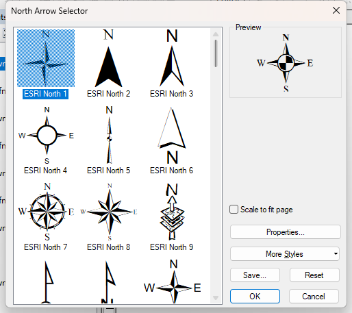
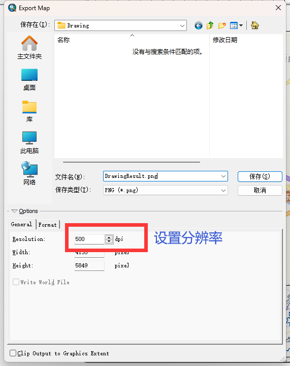

制图
0、导入数据
- 导入 演示材料/要素合并与消融/1.shp 和 前面要素消融得到的dissolve_fid图层
打开属性表可以发现1.shp里面只有一个数据，我想绘制一个网格图，分为上下两个部分，下面进行拆分和合并的操作。
1、拆分
- 打开Advanced Editing，如果没有
- 开始编辑
- 拆分
- 拆分结果
2、使用Dissolve合并下半部分
- 导出下半部分的数据
上半部分也是一样导出，但是只有一块，不需要合并
- 消融合并
- 最终结果
3、绘制网格
- 上下部分均绘制网格大小为1000米的网格
注意参考坐标系是否为CGCS 2000

- 使用Identity删除掉不在图层上的点
详看网格绘制的第3部分。
4、改为Layout视图
- 调整页面大小
5、插入图例
- 选择图例内容
- 修改标题及其样式
- 设置边框、背景色、阴影
- 确定
其他参数可以自己调整，比如图例内间距，文字样式，排序等
6、插入指北针
- 选择需要的样式

- 设置边框和背景色
7、插入比例尺
- 选择想要的样式
- 修改单位与文字、设置边框背景色
7、插入缩略图
- 添加图层，并设置样式
8、使用Maponline添加底图
- 添加的是天地图的街道地图和标注地图
这里发现图例并不是全是白色背景，可以修改图例的背景的Gap，指北针同。
- 设置图层透明度
9、导出图片
- File > Export Map
- 设置保存路径和dpi

- 导出的图片
END
Arcmap的笔记到此就告一段落了，希望对你有帮助。
完结撒花✿✿✿